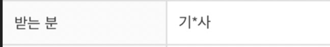
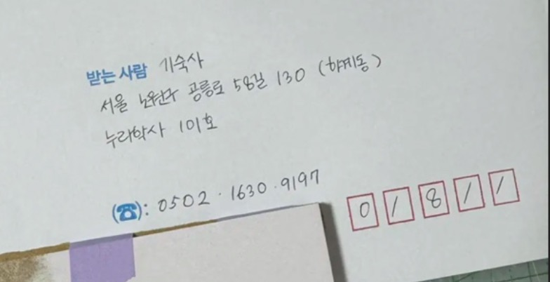
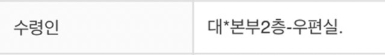
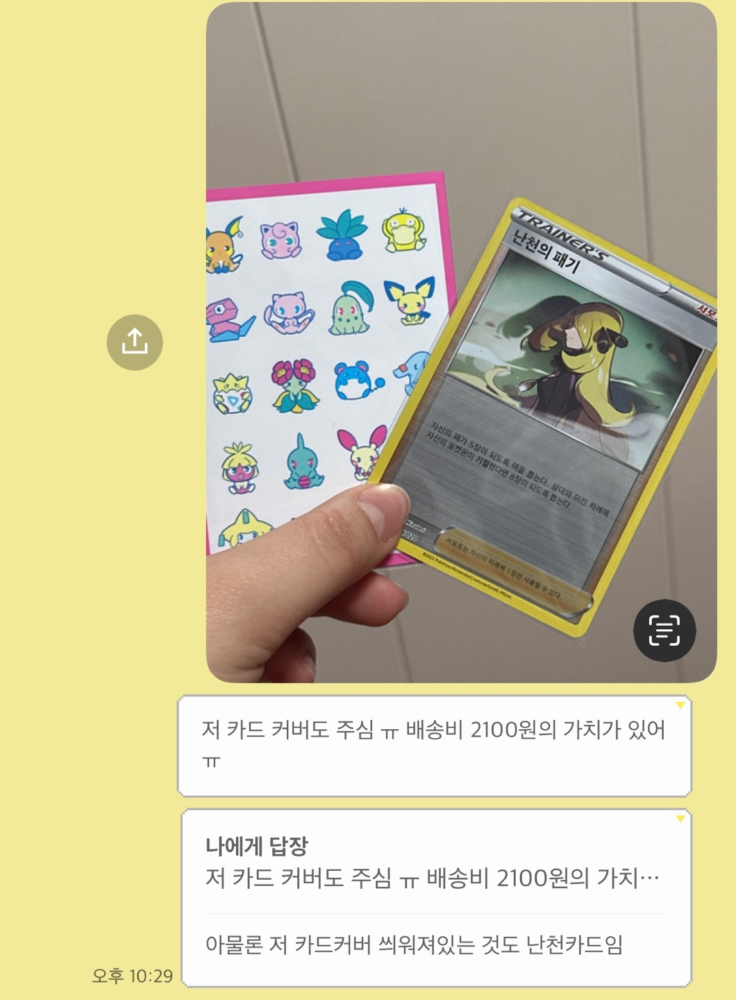

☎ 001)2025-0326 ☎ 23101051 최성희
★☆★☆★☆★☆★☆★☆★☆★☆★☆★☆★☆
★☆★☆★☆★☆★☆★☆★☆★☆★☆★☆★☆
충격 공포 기괴 실화
때는 지난 설 연휴, ‘포켓몬 카드 게임’에서 내가 가장 좋아하는 캐릭터의 새 카드가 실물카드로 출시되었다는 소식을 접하게 되었다. 그런데 너무 일러스트가 마음에 안 들어서 (...) 예전 카드들은 어떻게 생겼었나 하며 이전에 출시된 카드를 서치하기 시작했다. 그렇게 번*장터에 들어가서 카드를 둘러보 있는데 이게 웬걸, 위시리스트에 있는 카드를 1,000원에 판매한다는 글을 발견했다. 보통 특정 카드를 구매하는 것은 프리미엄이 많이 붙기도 해서 20,000원이 넘어가는 경우가 꽤 있기 때문에 횡재라고 생각했다. 바로 판매자에게 번*톡을 보내버렸다. 한 장만 구매하는 건 불가능하다고 하길래 두 장을 구매해서 총 2,000원에 위시리스트에 있던 카드를 구매했다. 그런데 또 이게 웬걸, 판매자가 제주도에 살아서 배송비가 2,100원이라는 사실. 배보다 배꼽이 더 큰 결제를 하게 됐다. 하지만 정말 갖고 싶었던 카드고, 배송비를 내도 다른 판매자들보다는 저렴하게 판매했기 때문에 사지 않을 이유가 없었다. 그런데 설 연휴라 배송이 지연됐기 때문에 주문 사실을 완전히 까먹고 있었다.
그렇게 설 연휴가 지나고 며칠 뒤, 번*장터에서 배송 완료 알림이 떴다. 그제서야 그 배보다 배꼽이 더 큰 카드를 구매했다는 사실을 떠올리고 싱글벙글(^^) 하면서 밖에 나갔는데 집앞이 휑하다. 아무런 택배도 도착하지 않았다. 설마설마해서 배송지를 확인해봤더니 지난학기 살던 누리학사…로 되어있던 것. 기숙사 퇴실 후 배송지를 바꾸는 것을 까먹었던 것이다. … 진짜 미친거지…. 그래서 침착하게 일단 기숙사 경비실에 연락을 해야겠다고 생각했다. 그런데 누리학사 경비실 연락처가 생활관 홈페이지에도 나와있지 않아서 기숙사 행정실에 전화를 걸었다.
“제가… 지난 학기 누리학사에 살았는데요 …, 그… 배송지를 못 바꿔서… 택배가 그쪽으로 가서… 누리학사 경비실에 연락을 드리려고 하거든요…. 혹시 연락처를 알 수 있을까요…?”
하고 여쭤봤더니 홈페이지에 있다고 바로 끊으셨다. 보니까 모바일 사이트에서는 안 보이고 PC로 들어가야 보이더라. 뻘쭘.
뭐 아무튼 그렇게 경비실 전화번호를 열심히 찾아서, 누리학사 경비실에 전화를 걸었다. 그리고 또 구차하고 주절주절 처음부터 상황 설명을 다시 드렸다.
“제가… 지난 학기 누리학사에 살았는데요 … (중략) 그래서 택배를 좀 맡아주실 ㅅ…”
말씀을 드리려는데 갑자기 경비아저씨, 갑자기 내 말을 딱 자르시고는
“우리는 그런 거 안 합니다. 기숙사 행정실로 전화하세요.”
…? 저 방금 행정실에다가 전화했다가 온 건데요…. 그렇게 또 다시 행정실로 전화를 걸었다. 그런데 괜히 소심해져서 같은 번호로 연결 안 하고 끝자리가 다른 행정실 연락처로 다시 전화를 걸었다.
“제가… 지난 학기 누리학사에 살았는데요 …”
그랬더니 출입허가증을 직접 받고 기숙사에 방문해보라는 연락이 왔다. 그래서 그 다음날 기숙사에 방문하기로 했다. 했었는데, 그런데, 갑자기 그 다음날 폭설이 내려서 못갔다. 진짜 말도 안 돼. 그래서 택배가 배송되고 이틀만에 학교를 방문했다.
본가가 은평구에 있어서 일단 학교에 가려면 약 1시간 30분 정도의 거리를 가야 한다. 석계역에서 내려서 노원13을 타고 가려고 했는데 하도 노원13이 안 오길래 결국 1227을 타고 정문에서 내렸다. 우리 학교 학생이면 누구나 알듯이, 정문에서 기숙사 행정실을 가는 건 상당히 번거롭다. 가기가 너무 귀찮아서 그냥 냅다 학생증으로 누리학사 세콤을 찍었는데 어 ? 왜 열리지 (???) 내적으로 ‘나이스’를 외치고 들어갔다. 그렇게 자연스럽게 기숙사생인 척을 하고 택배실을 들어갔다.
그런데… 택배가 또 없어 …?
그래서 그제서야 배송조회를 들어가봤더니…,

수취인명도 내 이름이 아니라 ‘기*사’ 로 되어있는 것이다. 기*사가 누군데 ??? 누구야??? 눈 펑펑 온 다음날이라 손도 시려워 죽겠는데 빨리 내 포켓몬 카드를 가져와야겠다는 생각에 또 판매자한테 연락을 넣었다. 그랬더니 판매자가 보내주는 사진 한 장.

‘세상에 이름이 기숙사인 사람이 어디있냐고요’
… 그렇다. 구매하는데만 급급해서 수취인명도 판매자한테 알려주지 않았던 것이다. 판매자는 그냥 내가 등록한 배송지명을 그대로 적었을 뿐이고... 아무튼간에, 제대로 된 절차를 거쳤으면 택배가 기숙사에 있어야 하는 게 맞는데… 수령인 칸에 적혀있는 내용이 이상하다….

‘아니 내 포켓몬 카드가 대학본부에 있다고???’
너무 예상하지 못한 곳에 내 포켓몬 카드가 있다는 사실에 갑자기 식은 땀이 났다. 아니, 우편실에서 택배 까본 거 아냐??? 갑자기 택배 뜯었는데 포켓몬 카드 있는 거 본 거 아냐??? 아니 정말로??? 그렇게 누리학사에서 정 반대편에 있는 대학본부로 향했다.
별별 생각을 하고 식은땀을 질질 흘리며 대학본부로 향했다. 건물이 왜그렇게 넓은지. 계단으로 올라가는데 숨 차서 죽는 줄 알았다. 심장을 부여잡고 우편실에 들어가서 우편 서랍…? 같은 곳을 열심히 봤는데도… 없어…? 그래서 또 우편실에서 근로하는 학생분께 문의를 드렸다…. 또 다시 구구절절하게 이야기를 늘어놓으면서
“그러니까 제가… 지난학기 누리학사에 살았는데요…”
그렇게 또 구구절절 말씀을 드리는 게 너무 지쳐갈 때쯤 근로 학생분께서 너무 친절하시게도… 우편실 안에 있는 모든 서랍을 다 하나하나 확인해주셨는데… 없었다… 내 택배가 (ㅠㅠ). 아마도 없으면 기숙사 행정실 쪽에서 가져갔을 거라고 하신다.
‘그놈의 행정실!!!!!!!!!!!!!’
결국 또 대학본부에서 다시 누리학사로 향했다.
그런데 정말 생각했던 것처럼 이미 행정쪽에서 처리를 했으면… 확실히 기숙사에 있어야 정상이지 않겠는가? 직접 편지를 보관해봤자 소용이 없을테니…. 그래서 다시 누리학사에 들어가서 택배실을 더 기웃기웃 거려봤지만 찾을 수 없었다…. 그렇게 뒤돌아서 나오는 순간 눈에 들어온 ‘우체통’. 아니 설마…? 하고 지난학기 살았던 101호의 우체통을 보니…
[ 발 견 ]
그래서 원래 5분이면 끝났을 택배 회수가 나의 뻘짓으로 인해 1시간 짜리 대장정으로 마무리 되었다.
….
매사에 있어서 꼼꼼하게 잘 확인을 합시다. 본가에 다시 들어오면 배송지가 이전 주소로 남아있는지 아닌지... 좀 잘 확인하고 상식적인 생각도 잘 하고… 이런 일이 다시는 없게끔 돌다리도 두드려보고 건너야 합니다.
‘머리가 나쁘면 몸이 고생한다.’
